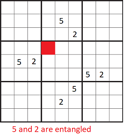
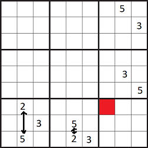

Sudoku generator
This is a sudoku generator (not playable but it gives you the solution and the grid with numbers that are deleted). I will be creating a playable version soon.
1 2 3
4 5 6
7 8 9
-> If you don’t feel like reading the code this is what is happening (I will refer to the 3x3 squares by numbers in the same order of the square numbers above):
Create the cross :
1) Randomly fill the squares 2 and 4
2) Create the squares 6 and 8 such as they work with the squares 2 and 4
3) Create the square 5 thanks to these 4 squares (if their is a problem such as entanglement switch the position of 2 numbers (one of them is the one that is creating the problem) of 2 matrix that are opposite -> (2 and 8) or (4 and 6))

Create the corners:
1) Create the squares 1, 3 and 7 thanks to the dependancies (the other squares that are in their lane)7
2) Create the last square -> If it doesn’t work fix by switching only horizontally numbers if the matrix is vertical to the square and vertically if the matrix is horizontal to the matrix (look at a picture called switching and yes the numbers 2 and 5 must be on the same column so you make sure not to destroy the rest of the sudoku)

-> if the numbers that are creating the problem cannot be switch adequatly -> restart the generation (since it’s fast it’s not much of an issue)
And there you go you have a sudoku generator 😃